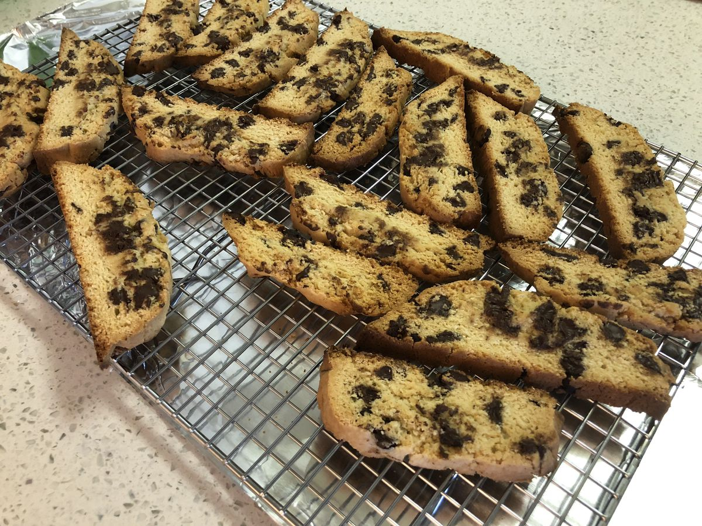

Based on https://www.kingarthurflour.com/recipes/vanilla-biscotti-recipe
Personal rating: 5 / 5

6 Tbsp butter
2/3 cup sugar
1/4 tsp salt
2 tsp vanilla extract
1.5 tsp baking powder
2 eggs
2 cups flour
1.5 cups chocolate chips, cranberries
(Optional) 1 Tbsp cocoa powder
In the large glass or metal bowl, beat the butter, sugar, salt, vanilla, and baking powder until the mixture is smooth and creamy
Beat in the eggs and add the flour until smooth. Will be sticky
Add the chocolate chips and stir until uniform
Preheat oven to 350
Allow to cool for 30 minutes, then carefully transfer to a cutting board
Preheat oven to 325
Transfer to a rack to cool